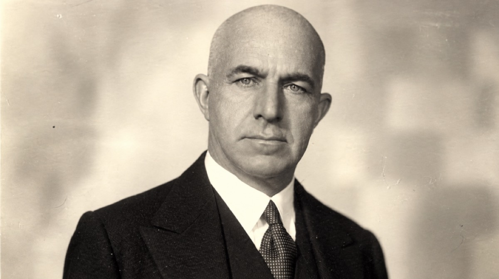

Behiç Erkin
Mucizelere İnanmak Kolaydır Cumhuriyetimizin 103. yılını kutlarken, bu Cumhuriyet’in hangi şartlarda ve nasıl kurulduğuna yeniden bakmamız gerektiğini düşünüyorum. İstiklâl Harbi‘ni çoğumuz okullarda büyük meydan…

Mucizelere İnanmak Kolaydır
Cumhuriyetimizin 103. yılını kutlarken, bu Cumhuriyet’in hangi şartlarda ve nasıl kurulduğuna yeniden bakmamız gerektiğini düşünüyorum.
İstiklâl Harbi‘ni çoğumuz okullarda büyük meydan muharebeleri, olağanüstü fedakârlıklar ve neredeyse mucizevî zaferlerden oluşan bir tarih olarak öğrendik. Bu anlatıda haklı bir gurur vardı. Fakat anlatımızda önemli bir eksiklik de bulunmaktadır.
Zaferin nasıl mümkün olduğu yeterince anlatılmaz.
Bu eksiklik, bizi bugün bile etkileyen bir düşünce alışkanlığına sürüklemiştir. Büyük buhranlarla karşılaştığımızda, bütün sorunlarımızı çözecek yeni bir Atatürk beklemeye başlarız. Sanki tarihin içinden bir kahraman çıkacak, sihirli lambadan çıkan bir cin gibi bütün sıkıntılarımızı ortadan kaldıracaktır. Fakat başarının özünü anlarsak, ileriki zamanlarda bu kabiliyetimizi yeniden ortaya çıkartabiliriz.
İstiklâl Harbi‘nin gerçek hikâyesi, mucizevî anlatıdan çok daha öğretici ve hatta gurur vericidir.
Çünkü bu savaşı kazanan insanlar gökten inmemişti. Onlar çok iyi bir eğitimden geçmiş, yenilgilerle yoğurulmuş, hatalarını görmüş, öğrendiklerini kayda geçirmiş ve bütün bu tecrübelerini milletlerinin varoluş mücadelesinde kullanmışlardı; ve hatta yeri geldiğinde içinde bulundukları sisteme rağmen ülkenin menfaatini korumak için mücadele edebilmiş insanlardı. Tabii ki Atatürk’ün dehası ve karakteri en belirleyici faktörlerden biridir. Ancak yegâne belirleyici değildi.
Bu yazının kahramanı tam da böyle biri: Memleketinin menfaati uğruna doğru bildiğinden sapmayan ve sebat eden bir gizli kahraman: Behiç Erkin.
Sıkıntılar İçinde Gelişim
Behiç Bey‘in askerî kariyeri onu savaş tarihinin genellikle arka planda bıraktığı bir alana yöneltti: ulaştırma ve demiryolları.
Burada karşılaştığı sorun yalnızca trenleri işletmek değildi.
Osmanlı topraklarında inşa edilmiş demiryollarının tamamı yabancı şirketler tarafından işletiliyordu. Teknik bilgi, işletme tecrübesi ve uzman personel büyük ölçüde yabancıların elindeydi. Kendi topraklarında asker ve malzeme taşımak isteyen bir devlet, bunun için başkalarının bilgisine ve imkânlarına bağımlı kalıyordu.
Bir ordunun kendi askerini, silahını ve cephanesini kendi ülkesinde bağımsız biçimde taşıyamaması ne anlama gelirdi?
Behiç Bey için bu, yalnızca bir ulaştırma sorunu değildi. Bu, bir egemenlik ve millî güvenlik meselesiydi.
O günlerde demiryollarının Türkler tarafından işletilmesi, Türkçenin işletme dili hâline gelmesi ve Türk teknik personelin yetiştirilmesi için verdiği mücadele, ileride çok daha büyük bir mücadelenin temelini oluşturacaktı.
Çünkü bir gün o demiryolları, bir milletin kaderini taşıyacaktı. Nitekim bugün o demiryollarını köprülerimize ve otoyollarımıza ve hatta millî askeri sanayimize benzetmek mümkündür/
Yenilgilerden Tecrübeyle Harmanlanan Bilgi
Behiç Bey‘in nesli şanslı bir nesil değildi.
Trablusgarp Harbi, Balkan Harpleri ve ardından Birinci Dünya Savaşı… Bu nesil, askerlik sanatını yalnızca mekteplerde değil, yenilgilerin ve savaşların ağır şartları altında öğrendi.
Özellikle Balkan Harpleri, Osmanlı ordusunun yalnızca asker sayısı veya silah gücü bakımından değil, teşkilat ve lojistik açısından da ne kadar ciddi sorunları olduğunu göstermişti.
Behiç Bey‘in şu değerlendirmesi, yaşanan felaketlerden çıkardığı dersi özetliyordu:
“Balkan Harbi’nde müttefik devletlerin pek çok demiryolu hattına karşılık bizim bir hattımız vardı. Hep ulaşım yolları çok olan sonuç elde etti.”
Bu cümlenin üzerinde durmamız gerekir.
Çünkü savaşları yalnızca cephedeki kahramanlıklarla açıklamaya alışmış bir millet için son derece önemli bir gerçeğe işaret eder.
Bir ordunun ne kadar cesur olduğunun, askerlerinin ne kadar iyi savaştığının elbette önemi vardır. Fakat o askerler zamanında cepheye ulaşamazsa, cephaneleri tükenirse, yiyecekleri gelmezse veya yaralıları tahliye edilemezse en parlak askerî planlar bile kâğıt üzerinde kalır.
Bugün askerî çevrelerde neredeyse bir atasözü hâline gelmiş bir söz vardır:
“Lojistik nefes gibidir; değeri ancak kesildiğinde hissedilir.”
Behiç Bey bu gerçeği yaşayarak öğrenmişti. Mustafa Kemal ise onu İstiklâl Harbi‘nde bu yüzden demiryollarının başına getirmişti.
Fakat onu önemli kılan yalnızca öğrenmesi değildi. Öğrendiklerini başkalarının da kullanabileceği bilgiye dönüştürmesiydi.
1914 yılında, henüz 38 yaşındayken, Demiryollarının Askerlik Nokta-yı Nazarından Tarihi – İstimali – Teşkilatı adlı kitabını yayımladı.
Eserinde demiryollarının tarihini, Osmanlı ile çağdaşı devletlerin demiryolu sistemlerini, askerî ihtiyaçlar doğrultusunda nasıl teşkilatlanmaları gerektiğini ve savaşlarda nasıl kullanılabileceklerini inceledi. Üstelik yalnızca bilgileri sıralamakla kalmadı; mevcut sistemin eksikliklerini de eleştirdi.
Ateşle İlk Sınav ve Beklenmedik Mücadeleler
1914 yılında Birinci Dünya Savaşı başladığında Behiç Bey‘in öğrendiklerini uygulama zamanı gelmişti.
Osmanlı orduları birden fazla cephede savaşıyor, sınırlı demiryolu hatları üzerinden büyük miktarda asker, silah, mühimmat ve malzeme sevk etmek zorunda kalıyordu.
Özellikle Çanakkale Cephesi‘nde ulaştırma ve sevkiyatın başarısı, savaşın sürdürülebilmesi bakımından hayatî önem taşıyordu.
Elde ettiği başarılar yalnızca Osmanlı makamlarının değil, müttefik Alman ve Avusturya makamlarının da dikkatini çekti. Almanlar, Kayzer‘in onayıyla kendisine Birinci Sınıf Demir Haç nişanını takdim etti. Avusturyalılar ise İkinci Derece Leopold Nişanı ile onurlandırdı.
Fakat ilginçtir, savaş meydanlarında aynı safta bulunmak, herkesin birbirine eşit saygı gösterdiği anlamına gelmiyordu.
Aktarılan bir hatıraya göre, Alman Bronsart Paşa, Behiç Bey‘in kendisiyle aynı derecede bir Alman devlet nişanına layık görülmesini kabullenememiş ve Liman von Sanders Paşa‘ya giderek itiraz etmişti.
“Nasıl olur da Osmanlı’daki en yüksek rütbeli olan benimle bir Türk subayı aynı mertebede bir Alman devlet nişanına sahip olabilir?”
Bu olay, dönemin Osmanlı subaylarının içinde bulundukları şartları anlamak açısından önemlidir.
Bir yanda savaşın bütün maddi zorluklarıyla mücadele etmek, diğer yanda kendi müttefiklerine bile yeteneklerini kabul ettirmek zorundaydılar.
Bir Milletin Kaderini Taşıyan Raylar
Birinci Dünya Savaşı sona erdiğinde Osmanlı İmparatorluğu yenilmişti.
Mesele, bir milletin varlığını sürdürebilmesiydi.
Anadolu‘da başlayan Millî Mücadele‘nin önünde devasa bir lojistik sorun bulunuyordu. Askerlerin, silahların, cephanenin ve diğer malzemelerin doğru yere, doğru zamanda ulaştırılması gerekiyordu. Üstelik bütün bunlar son derece kısıtlı imkânlarla yapılmalıydı.
Behiç Bey‘in yıllardır üzerinde çalıştığı mesele, artık vatanın kurtuluşunun temel şartlarından biri hâline gelmişti.
Fakat işler sanıldığı kadar basit değildi.
Demiryolları yalnızca raylardan, lokomotiflerden ve vagonlardan oluşmaz. Onları çalıştıracak makinistler, bakım ustaları, hareket memurları, mühendisler ve işletme personeli gerekir. Her birinin ayrı bilgisi, ayrı tecrübesi vardır. Bunlardan birinin eksikliği bile bütün sevkiyat sistemini aksatabilir.
Osmanlı’nın yıllar boyunca yeterince yetiştiremediği Türk demiryolu personeli, şimdi Millî Mücadele‘nin karşısına ciddi bir sorun olarak çıkıyordu.
Demiryolu işletmeciliğinde görev yapan gayrimüslim personelin teknik bilgisine ve tecrübesine ihtiyaç duyuluyordu.
Ama işgalin, savaşların ve toplumsal kargaşanın yarattığı ortamda başka bir tehlike ortaya çıkmıştı.
Anadolu‘nun işgalden kurtarılması için mücadele eden bazı silahlı gruplar, gayrimüslim demiryolu çalışanlarını hedef alıyordu. Bu saldırılar yalnızca insanların hayatına kastetmiyor, aynı zamanda Millî Mücadele‘nin kendi ulaştırma imkânlarına zarar veriyordu.
Bir başka ifadeyle, vatanı kurtarmak isteyenler, farkında olmadan vatanın kurtuluşunu zorlaştırabiliyordu.
Bu durum o kadar ciddi bir hâl almıştı ki Garp Cephesi Komutanı Ali Fuad Paşa, gayrimüslim demiryolu personelinin can güvenliğinin milletin sorumluluğunda olduğunu vurgulayan bir emir yayımlamak zorunda kaldı.
Bu tarz insan kaynaklarına yönelik problemler yetmiyormuşçasına Behiç Erkin’in mühendislik problemlerini de son derece kısıtlı kaynaklarla çözmesi gerekiyordu.
Ziya Gürel o yaratıcı zihni kitabında anlatmış. Buraya kendi özetimi yazıyorum:
Büyük Taarruz sırasında Behiç Erkin‘in karşısına çıkan en büyük problemlerden biri, ilerleyen ordunun gerisinde kalan demiryollarının yeterince hızlı onarılamamasıydı. Yeni ray temin etmek neredeyse imkânsızdı. Bunun üzerine Behiç Bey, eldeki demiryolu ağını âdeta bir malzeme deposuna dönüştürdü. Daha önce Toros tünellerinden söktürdüğü dekovil malzemeleriyle Azarıköy‘de bir ikmal hattı kurdurmuştu. Şimdi ise bu hattaki geniş hat raylarını söktürerek yerlerine dar hat rayları döşetiyor, kazanılan malzemeyi ordunun ilerlediği istikametteki tahrip edilmiş demiryollarının onarımında kullanıyordu. Bununla da yetinmedi. Afyon‘un kuzeyindeki Gazlıgöl ve Hamam çevresinden ray ve traverslerin sökülmesini, bunların Çobanlar–Afyon hattının yeniden açılmasında kullanılmasını emretti. Üstelik onarımın tek noktadan değil, üç ayrı noktadan aynı anda yürütülmesini sağladı. Böylece eldeki malzemeyi yeniden kullanarak ordunun ikmal hattını batıya doğru açmaya çalıştı. Bu başarı, mucizelerden değil, malzeme kıtlığı karşısında geliştirilen mühendislik çözümlerinden doğuyordu.
Türk Subayı İnisiyatif Almayı Bilir
Mustafa Kemal Paşa, İnönü Muharebesi esnasında cepheye yapılacak sevkiyatın hızlandırılmasını istiyordu.
Bu isteğin gerisindeki askerî zorunluluğu anlamak zor değil. Savaşta zaman kimi zaman en az cephane kadar değerlidir. Birliklerin veya silahların geç ulaşması, bir muharebenin kaderini değiştirebilir.
Fakat demiryollarının da sınırları vardır.
Bir trenin hızını yalnızca makinistin cesareti veya komutanın iradesi belirlemez. Rayların durumu, hattın geometrisi, lokomotifin gücü ve vagonların teknik özellikleri vardır.
Behiç Bey bu sınırları biliyordu. Önünde iki seçenek bulunuyordu. Ya emri harfiyen uygulayacak, trenlerin hızını artıracak ve muhtemel bir kazayla bütün sevkiyatı tehlikeye atacaktı ya da bunu uygulamayacak, gerekçesini açıklayacak ve bütün sorumluluğu üstlenecekti.
İkinci yolu seçti.
“Bu hat 40 kilometreden fazla sürat yapmaya müsait değildir Paşam. Hızlandıralım derken trenler raydan çıkabilir ve tek bir sevkiyat bile yapamayabiliriz.”
Bu cevap, askerî disiplinin en önemli meselelerinden birini de gözler önüne seriyordu. İyi bir subay, yalnızca kendisine verilen emirleri yerine getiren kişi midir? Yoksa emrin ulaşmak istediği amacı anlayan, o amaca ulaşmak için sahip olduğu uzmanlığı kullanan ve gerektiğinde komutanını uyaran kişi midir?
Behiç Bey‘in görevi trenleri mümkün olan en yüksek hızla hareket ettirmek değil, sevkiyatı başarıyla tamamlamaktı.
Bunun için gerektiğinde bir emre karşı çıkmayı göze alabiliyordu. Çünkü karşısındaki sorunun çözümünü biliyordu ve bildiği şeyin arkasında duracak cesarete sahipti.
Bu hikâyede kahramanın kılıcı bilgi, kalkanı tecrübe, gücü ise sebatıdır.
Zaferin Görünmeyen Cephesi
İstiklâl Harbi‘nin büyük zaferlerini düşündüğümüzde gözümüzün önüne çoğunlukla cepheler gelir.
Sakarya‘da savunma yapan askerler, Büyük Taarruz‘da ilerleyen birlikler, Başkomutanlık Meydan Muharebesi ve İzmir‘e uzanan büyük yürüyüş…
Fakat bütün bu başarıların arkasında başka bir cephe daha vardı: demiryolları. Bir lokomotifin bakımını yapan işçinin, bir trenin hareketini düzenleyen memurun, sevkiyat planlarını hazırlayan subayın ve rayların işletilmesini sağlayan teknik personelin cephesi.
Bu cephede düşmanla doğrudan çarpışılmıyordu. Fakat buradaki bir başarısızlık, savaş meydanındaki bütün başarıları tehlikeye atabilirdi.
Behiç Erkin, bu görünmeyen cephenin en önemli isimlerinden biri oldu.
Çanakkale‘de edindiği tecrübeyi, yıllardır geliştirdiği demiryolu bilgisini ve Osmanlı’nın yenilgilerinden çıkardığı dersleri, şimdi Anadolu‘nun kurtuluşu için kullanıyordu.
Bir zamanlar yalnızca eksikliklerini tespit ettiği demiryolu sistemi, onun elinde bağımsızlık mücadelesinin en önemli araçlarından birine dönüşüyordu ve yıllar önce kitaplarda anlattığı bilgiler, şimdi bir milletin kaderine etki ediyordu.
Kahramanın Asıl Mirası
Behiç Erkin‘in hikâyesini yalnızca Millî Mücadele‘ye yaptığı hizmetlerle sınırlandırmak doğru olmaz.
Çünkü onun hayatındaki mücadelenin temelinde, savaş kazanmanın da ötesine geçen bir mesele vardı.
Bir millet kendi altyapısını işletebilmeli, kendi uzmanlarını yetiştirebilmeli ve kendi teknik bilgisini üretebilmeliydi.
Bu anlayış Cumhuriyet’in kuruluşundan sonra da önemini korudu.
Demiryolları, yeni Cumhuriyet’in en büyük kalkınma hamlelerinden birinin simgesi hâline geldi. Cumhuriyet’in ilk on yılında demiryolu ağının genişletilmesi, yalnızca yeni raylar döşenmesi anlamına gelmiyordu.
Anadolu’nun birbirine bağlanması, üretimin pazarlara ulaşması, devletin ülkenin farklı bölgelerinde etkinlik kazanması ve millî iktisadi bağımsızlığın güçlendirilmesi anlamına geliyordu.
Behiç Erkin de Cumhuriyet döneminde demiryollarının teşkilatlanması ve geliştirilmesinde önemli görevler üstlendi.
Bir zamanlar Osmanlı’nın demiryolları üzerindeki yabancı bağımlılığını eleştiren genç subay, artık kendi ülkesinin demiryolu teşkilatını kuran kadronun başlıca isimlerinden biriydi.
İhtiyacın kaynağından gelen Behiç Erkin, Yüksek Mühendis Mektebi kanunun yazılmasında bizzat rol aldı ve bu kurumun bağımsız kimliğinin teşkilini destekleyen önemli figürlerden biri oldu.
Mehmet Fikri Santur’un, mühendislik eğitimimize önemli katkılar veren akademisyenimizin, Yüksek Mühendis Mektebi’nin başına gelmesinde bizzat rolü oynadı.
Hatta Mektep’in, zamanının Millî Eğitim Bakanlığı yerine Ulaştırma Bakanlığı’na bağlanarak bağımsız bir ruh kazandırılmasını bizzat Behiç Erkin mümkün kıldı.
Bugün Yüksek Mühendis Mektebi’nin mirasçısı olan İstanbul Teknik Üniversitesi sorunlara çözüm arayan ruhunu hâlâ muhafaza etmektedir.
Kahramanın yolculuğu böylece başladığı yere, fakat değişmiş bir dünyaya ulaşıyordu.
Yıllarca uğruna mücadele ettiği fikir, yeni bir devletin kurumlarına dönüşmüştü.
Artık mesele yalnızca trenleri hareket ettirmek değildi.
O trenleri hareket ettirebilecek insanları, bilgiyi ve kurumları yetiştirmekti.
Mucizenin Aslı
Cumhuriyetimizin 103. yılında Behiç Erkin‘in hikâyesinden çıkarılması gereken dersin yalnızca onun ne kadar büyük bir kahraman olduğunu kabul etmekle sınırlı kalmaması gerektiğini düşünüyorum.
Elbette bu insanların hatırlanması, isimlerinin yaşatılması ve yaptıkları işlerin gelecek nesillere anlatılması gerekir.
Fakat asıl önemli olan, onların nasıl bu işleri yapabilecek insanlar hâline geldiklerini anlamaktır.
Behiç Erkin, İstiklâl Harbi başladığında birdenbire ortaya çıkmış, bir kahraman değildi.
Tabii, kabiliyetli ve çalışkan bir zabitti. Fakat Behiç Bey, yıllarca eğitim görmüş, çalışmış, savaşlara katılmış, yenilgilerden ders çıkarmış, kendi uzmanlık alanını geliştirmiş, öğrendiklerini kitaplaştırmış ve bütün bu birikimini en zor zamanlarda milletinin hizmetine sunmuş bir kahramandı.
Bu yüzden İstiklâl Harbi‘ni yalnızca büyük komutanların ve kahraman askerlerin olağanüstü cesaretiyle açıklamak eksik kalır.
Başarılı bir millî mücadeleyi mümkün kılan özelliklerden biri yıllarca türlü zorluklar içinde yetişmiş, düşünen, öğrenen, eleştiren, sorumluluk alan ve vazgeçmeyen bir neslin varlığıydı.
Bugün benzer büyüklükte sorunlarla karşılaştığımızda, tarihten çıkıp gelecek bir kurtarıcı beklemek yerine, bu neslin nasıl yetiştiğini sormamız gerektiğine inanıyorum. Yaşadığımız zorluklara, o kahraman nesil gibi çözüm üretme arzusuyla yanıp tutuşan bir nesil olarak ve asla yılmayarak bakmalıyız.
Bu bağlamda sormamız gereken önemli sorular var:
Behiç Erkinlerimizi yetiştirebiliyor muyuz?
İnsanlarımızın teknik bilgisine değer veriyor muyuz? Onların eleştirilerini dinliyor muyuz? Tecrübelerimizi kurumsal bilgiye dönüştürüyor muyuz? Hatalarımızdan öğreniyor muyuz? Bir sonraki nesle bizden daha güçlü kurumlar bırakabiliyor muyuz?
Ve belki de en önemlisi, doğru bildiğini söylemenin bedeli ağır olduğunda bile bunu yapabilecek insanlara sahip çıkıyor muyuz?
Cumhuriyet’in kuruluş hikâyesi bize yalnızca geçmişte neleri başardığımızı değil, bugün neleri başarabileceğimizi de anlatmalıdır.
Çünkü tarihte mucize gibi görünen başarıların arkasında çoğu zaman uzun yıllara yayılan bir hazırlık, birikim ve mücadele bulunur.
Behiç Erkin’in bize bıraktığı asıl miras budur.
Mucizenin adı akıldır.
Mucizenin adı bilgidir.
Ve bütün güçlüklere rağmen o bilgiye dayanarak yürümeye devam edebilmenin adı sebattır.